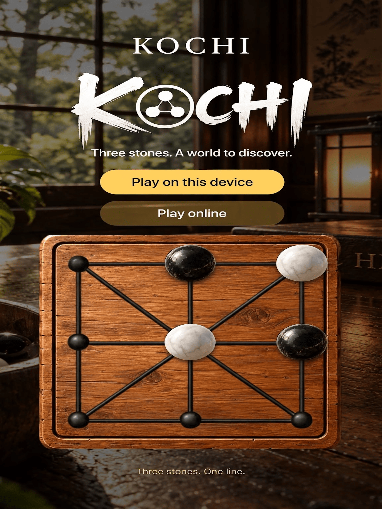
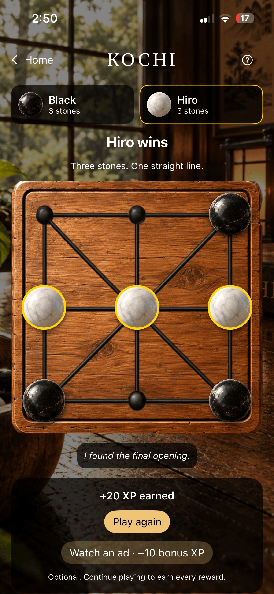
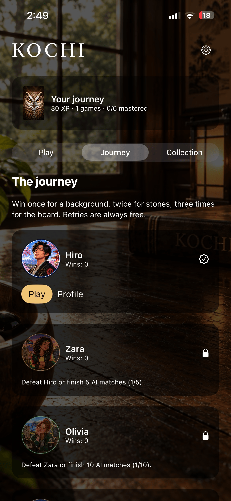
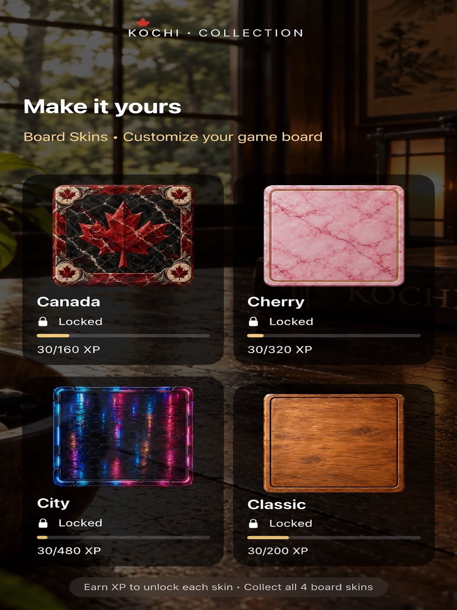
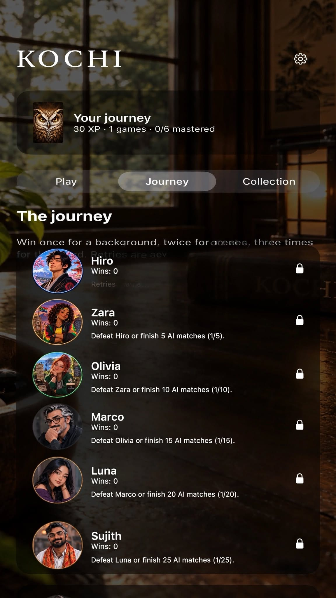

Place
Players take turns placing three pieces onto the board's nine playable points.


Easy to learn. Difficult to master. Place your three pieces, move along the board's connections, and outthink your opponent to create a straight line of three. Challenge distinct AI rivals, play locally with a friend, unlock new looks, and discover how much strategy can fit on nine points.
KOCHI begins with only three pieces per player, but every placement and movement changes the board. There is nowhere for a careless move to hide.
Players take turns placing three pieces onto the board's nine playable points.
Once all six pieces are down, move one piece at a time along the board's visible connections.
Create a straight line with all three of your pieces before your opponent does.
Challenge Hiro, Luna, Marco, Olivia, Sujith and Zara. Each opponent brings a distinct personality and style to the same deceptively small board.
Placement creates the position. Movement changes it. Attack, defend and find the line your opponent missed.
Face six personality-driven AI opponents, from patient precision to calculated pressure and pure unpredictability.
Unlock and mix board themes, backgrounds, playing pieces, line styles and profile avatars as you progress.
Play, improve and unlock more of KOCHI. New challenges and a few carefully hidden surprises wait deeper in the game.
Build your style, challenge the crew and watch the same nine-point board transform across more than 25 unique visual themes.




Keep playing. KOCHI rewards curiosity as much as strategy. Not every challenge appears on the roster.
KOCHI — A Game of Three is preparing for launch. App Store information will be added here when it becomes available.